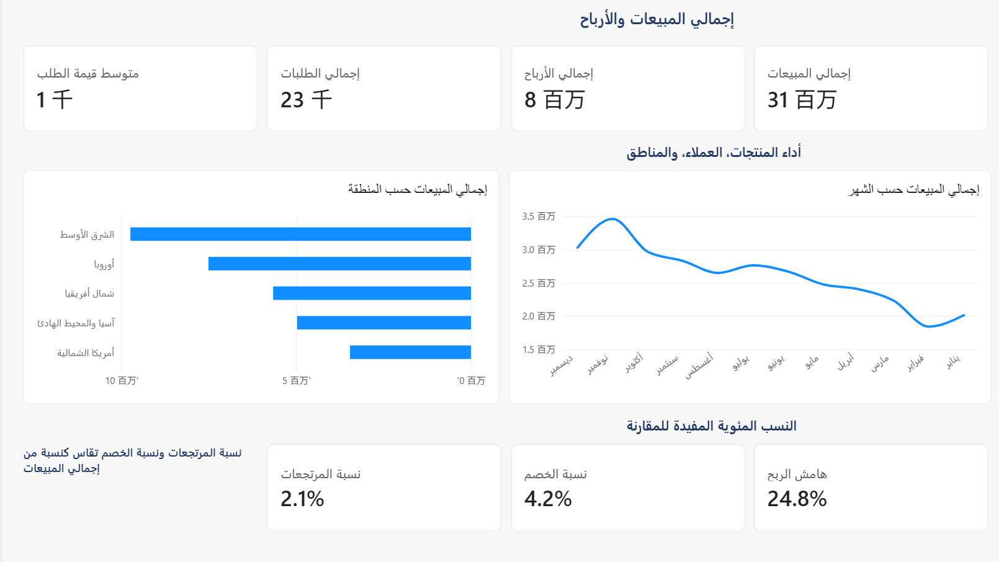
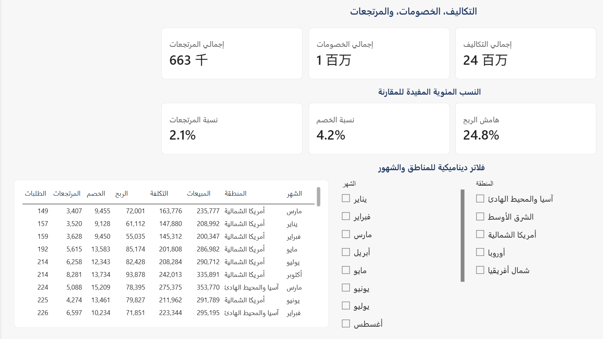
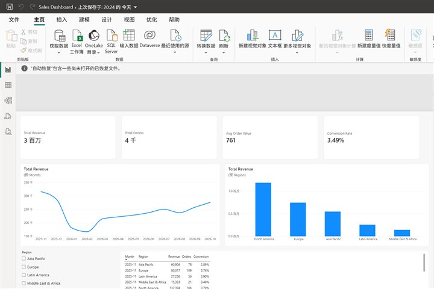
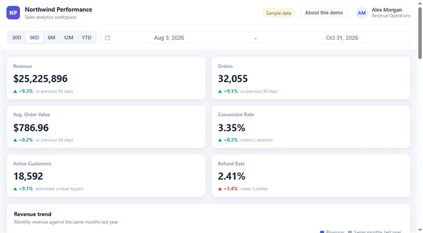
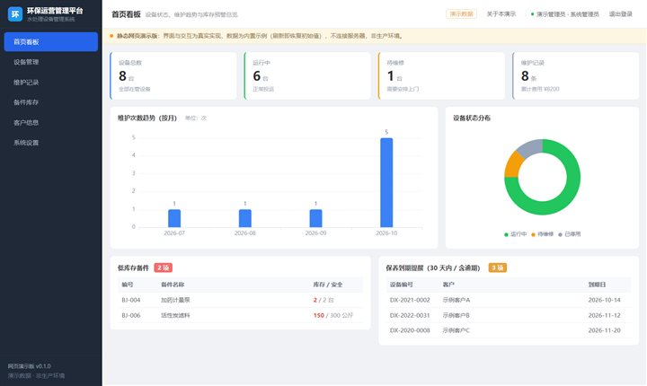
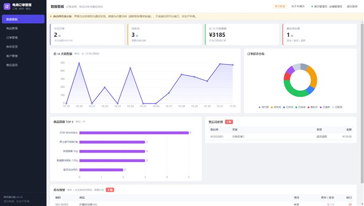

Power BI reports (including Arabic right-to-left), interactive web dashboards, and internal tools for operations and e-commerce teams. Every demo below is clickable.
Sample data · not a production systemTwo pages laid out right to left by hand — Power BI has no RTL switch, so every visual is mirrored manually.



KPI cards, monthly and weekly trends, a region slicer and a 60-row detail table, plus the Arabic right-to-left report shown above.

Six KPI cards, four charts, 30-day to 12-month presets, a custom date range and a paged detail table.

For an environmental-services team: dashboard, equipment, maintenance records, spare-parts stock, customers and settings.

Dashboard, products, orders, inventory and shipping, customers, and after-sales returns.